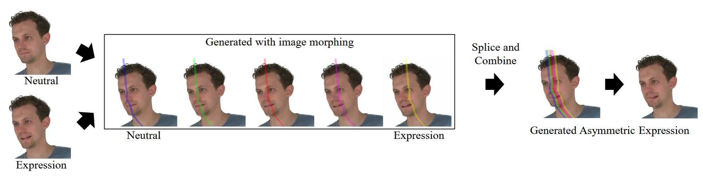
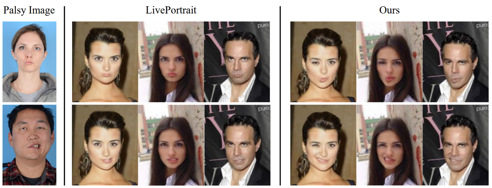
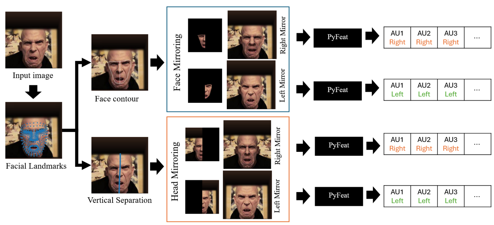
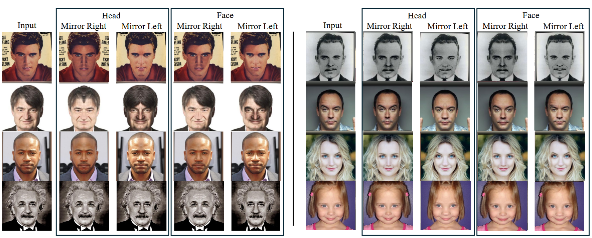

INSERT ABSTRACT / Project summary HERE?

Facial Expression Recognition (FER) systems often fail to generalize across diverse populations due to significant biases in existing datasets; particularly the under-representation of atypical facial morphologies such as facial palsy. This lack of representation leads to both technical shortcomings and ethical concerns, limiting the inclusiveness and fairness of FER in real-world applications. In this work, we present a novel synthetic data generation method —AFET (Asymmetric Facial Expression Transfer)— designed to simulate asymmetric facial expressions such as those observed in facial palsy. Our method blends halves of neutral and expressive faces from the same identity using a combination of facial landmark detection, locally weighted regression, and mesh-based warping for intermediate image generation. The resulting images maintain anatomical plausibility, making them suitable for model training and evaluation. Qualitative and quantitative evaluations demonstrate that our approach produces realistic facial asymmetry. By enabling the synthetic generation of underrepresented facial conditions, our method contributes to more equitable FER systems and offers a step forward in the ethical deployment of affective computing technologies.

@inproceedings{tan2025generating,
title={Generating Synthetic Images with Asymmetric Facial Expressions for Inclusive Facial Expression Recognition},
author={Tan, Daniel Stanley and Iren, Deniz},
booktitle={2025 13th International Conference on Affective Computing and Intelligent Interaction (ACII)},
year={2025},
organization={IEEE}
}

Facial expressions are essential for non-verbal human communication as they convey behavioral intentions and emotional states. While facial action units (AUs) can occur bilaterally or unilaterally, the existing research in affective computing predominantly concentrates on bilateral expressions, largely due to the lack of datasets with unilateral AU labels. In this study, we present a method for generating unilateral AU labels and assess its efficacy against expert-labeled facial images. Furthermore, we introduce a dedicated model trained on the generated data and evaluate its performance across multiple datasets. Our findings offer insights into feature extraction for unilateral facial expression recognition. This research contributes to advancing the understanding and recognition of nuanced facial expressions, with potential applications in various domains such as healthcare and human-computer interaction.

@inproceedings{iren2024unilateral,
title={Unilateral facial action unit detection: Revealing nuanced facial expressions},
author={Iren, Deniz and Tan, Daniel Stanley},
booktitle={2024 12th International Conference on Affective Computing and Intelligent Interaction (ACII)},
pages={275--282},
year={2024},
organization={IEEE}
}